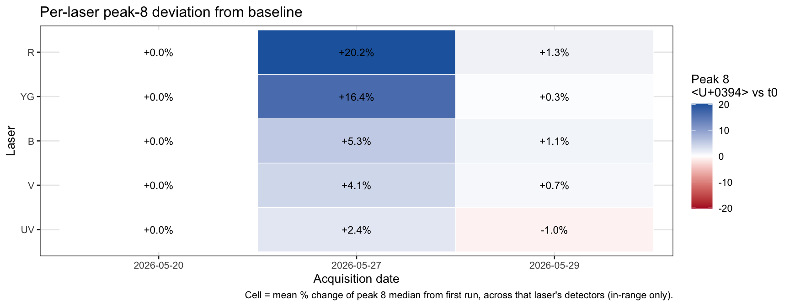
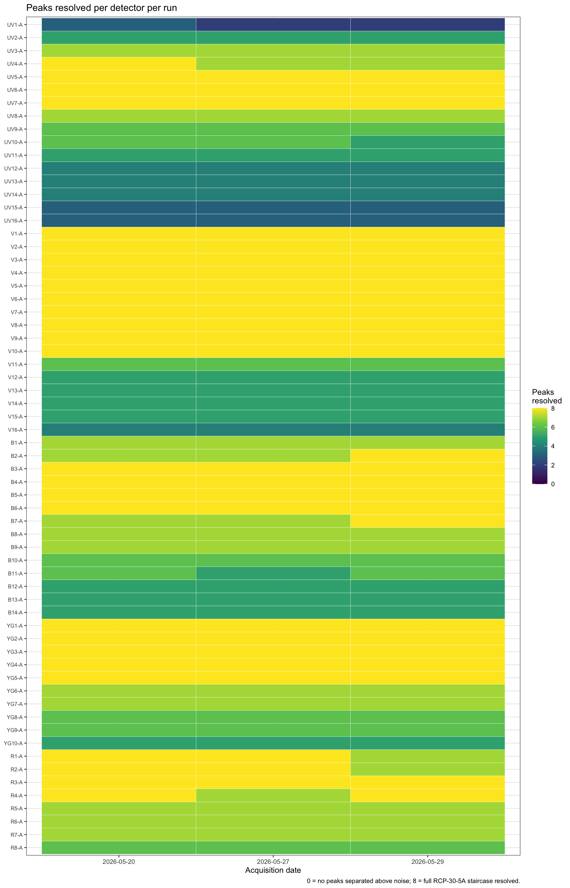
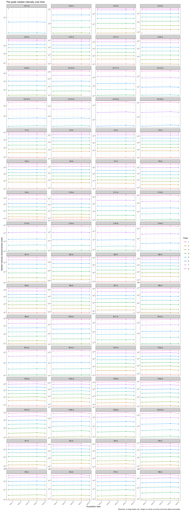
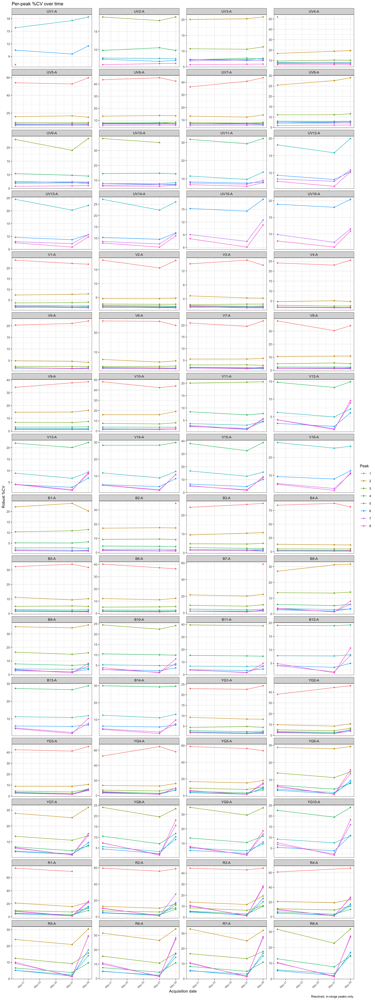

Secondary QC for the Cytek Aurora EVO (5L): RCP-30-5A 8-peak rainbow beads are acquired each run and tracked over time to catch instrument drift. The heavy work — reading the raw FCS, gating the beads, clustering the 8 populations and measuring each population in all 64 detectors — is done once per run by Process8Peak.R, which appends the results to peak_metrics.csv. This page only reads that archive, so it renders quickly and adds no load to the site build. (For per-run gating/clustering diagnostics, render 8peak_tracking_spectral/EVO_8 Peak Tracking.qmd on demand.)
Code
library(ggcyto) # scale_*_flowjo_biexp axis; pulls in flowCore, which masks dplyr verbslibrary(ggplot2)library(tidyr)library(readr)library(dplyr) # load LAST so dplyr's filter()/select() win the namespace masking# Display-only: read the archive produced by Process8Peak.R. No FCS, no flowClust.results_file <-if (file.exists("8peak_tracking_spectral/peak_metrics.csv")) {"8peak_tracking_spectral/peak_metrics.csv"} else"peak_metrics.csv"combined <-read_csv(results_file, show_col_types =FALSE)combined$date <-as.Date(combined$date)# Display constants — must match Process8Peak.R.n_peaks <-8biex_max <-4194304biex_pos <-5.62biex_neg <-0biex_width_basis <--250# Detector acquisition order (UV -> V -> B -> YG -> R), derived from the archive# so this page needs no FCS to know the channel layout.laser_levels <-c("UV", "V", "B", "YG", "R")det_order <- combined |>distinct(detector) |>mutate(laser =sub("[0-9]+-A$", "", detector),num =as.integer(sub("-A$", "", sub("^(UV|V|B|YG|R)", "", detector)))) |>arrange(match(laser, laser_levels), num)detector_channels <- det_order$detectorcombined$detector <-factor(combined$detector, levels = detector_channels)
Run status
One-line health summary per run: how many of the 64 detectors had peak 8 out of range (saturated at the 4,194,304 ceiling). A non-zero count means that detector’s brightest signal can’t be trusted on that day, and any intensity/SI metric derived from it is suspect.
Code
status <- combined |>filter(peak == n_peaks) |>group_by(date) |>summarise(saturated =sum(!in_range), total =n(), .groups ="drop") |>arrange(date)for (i inseq_len(nrow(status))) { r <- status[i, ] cls <-if (r$saturated ==0) "callout-note"else"callout-warning"cat(sprintf("::: {.%s}\n**Run %s** — %d / %d detectors saturated at peak 8.\n:::\n\n", cls, format(r$date), r$saturated, r$total))}
Note
Run 2026-05-20 <U+2014> 0 / 64 detectors saturated at peak 8.
Warning
Run 2026-05-27 <U+2014> 1 / 64 detectors saturated at peak 8.
Note
Run 2026-05-29 <U+2014> 0 / 64 detectors saturated at peak 8.
Per-run diagnostics
These per-run images are saved by Process8Peak.R when each run is processed, so the page stays light. The bead gate should land on the dense scatter cluster (red, not the debris); the 2D cluster view should show 8 tight, ordered, single-coloured blobs along the diagonal.
Each peak’s median intensity and %CV plotted against acquisition date, per detector, from the accumulated archive. Stable lines mean stable instrument performance; a step or drift flags a detector/laser problem. Only resolved, in-range peaks are shown. The two heatmaps give an executive overview before the detailed per-detector trends.
Per-laser overview
Collapses the 64 detectors into a 5-laser × dates heatmap of peak-8 deviation from baseline (first run for each detector, averaged across that laser’s detectors). A whole-row colour shift indicates a laser-level problem rather than a single detector. The first run is baseline so its row is 0% by construction.
Code
laser_of <-function(d) sub("[0-9]+-A$", "", as.character(d))p8_base <- combined |>filter(peak == n_peaks, in_range) |>group_by(detector) |>slice_min(date, n =1, with_ties =FALSE) |>select(detector, base_median = median) |>ungroup()laser_delta <- combined |>filter(peak == n_peaks, in_range) |>left_join(p8_base, by ="detector") |>mutate(delta_pct = (median - base_median) / base_median *100,laser =factor(laser_of(detector),levels =c("UV", "V", "B", "YG", "R"))) |>group_by(laser, date) |>summarise(delta_pct =mean(delta_pct, na.rm =TRUE),n_det =n(), .groups ="drop")lim <-max(abs(laser_delta$delta_pct), na.rm =TRUE)ggplot(laser_delta, aes(x =factor(date), y = laser, fill = delta_pct)) +geom_tile(colour ="white") +geom_text(aes(label =sprintf("%+.1f%%", delta_pct)), size =3) +scale_fill_gradient2(low ="#b2182b", mid ="white", high ="#2166ac",midpoint =0, limits =c(-lim, lim),name ="Peak 8\nΔ vs t0") +labs(x ="Acquisition date", y ="Laser",title ="Per-laser peak-8 deviation from baseline",caption ="Cell = mean % change of peak 8 median from first run, across that laser's detectors (in-range only).") +theme_bw(base_size =10)

Resolution-count heatmap
For each detector × run, the number of peaks resolved (0–8). A row going darker over time is the cleanest signal of a detector losing its dim peaks — i.e. rising noise floor or falling gain.
Code
resolution <- combined |>group_by(date, detector) |>summarise(n_resolved =sum(resolved), .groups ="drop")ggplot(resolution, aes(x =factor(date), y = detector, fill = n_resolved)) +geom_tile(colour ="white", linewidth =0.1) +scale_y_discrete(limits =rev(detector_channels)) +scale_fill_viridis_c(option ="viridis", limits =c(0, n_peaks),name ="Peaks\nresolved") +labs(x ="Acquisition date", y =NULL,title ="Peaks resolved per detector per run",caption ="0 = no peaks separated above noise; 8 = full RCP-30-5A staircase resolved.") +theme_bw(base_size =9) +theme(axis.text.y =element_text(size =6))

Code
# Trend of per-peak median intensity by acquisition date. Only resolved,# in-range peaks are plotted (unresolved peaks carry no trustworthy signal).trend <- combined |>filter(resolved, in_range) |>mutate(peak =factor(peak, levels =1:n_peaks))ggplot(trend, aes(x = date, y = median, colour = peak, group = peak)) +geom_line() +geom_point(size =1) +scale_y_flowjo_biexp(maxValue = biex_max, pos = biex_pos,neg = biex_neg, widthBasis = biex_width_basis) +facet_wrap(~ detector, scales ="free_y", ncol =4) +labs(x ="Acquisition date", y ="Median intensity (biexponential scale)",colour ="Peak",title ="Per-peak median intensity over time",caption ="Resolved, in-range peaks only. Single run shown as points until more dates accumulate.") +theme_bw(base_size =9) +theme(strip.text =element_text(size =8),axis.text.x =element_text(size =6, angle =45, hjust =1))

Code
# %robust-CV trend: the tightness of each peak is a sensitive drift indicator.ggplot(trend, aes(x = date, y = rcv, colour = peak, group = peak)) +geom_line() +geom_point(size =1) +facet_wrap(~ detector, scales ="free_y", ncol =4) +labs(x ="Acquisition date", y ="Robust %CV", colour ="Peak",title ="Per-peak %CV over time",caption ="Resolved, in-range peaks only.") +theme_bw(base_size =9) +theme(strip.text =element_text(size =8),axis.text.x =element_text(size =6, angle =45, hjust =1))

Brightest peak (peak 8) %CV
The brightest population is normally the tightest (rCV ~1–2%), so any rise in its %CV is a sensitive indicator of detector linearity, saturation, or noise at the top of the dynamic range. One line per detector, in_range only.
The blank/dimmest population’s spread tracks the noise floor: a stable peak 1 %CV means consistent background; a rising one signals increased electronic noise, optical scatter contamination, or compensation issues. One line per detector, in_range only.
How far the first resolved peak above the blank sits above peak 1, relative to peak 1’s own spread. Peak 1 is the “negative”; the positive is the lowest peak > 1 that is resolved and in range (surfaced as pos_peak so any change is visible).
Medians (\(\widetilde{m}\)) and robust SD (\(\widetilde{\sigma} = \mathrm{IQR}/1.349\)) on raw intensity. A higher SI means cleaner separation of the dimmest detectable signal from background; a downward trend flags rising background or falling detector gain.
Code
si_per_detector <-function(g) { cand <- g$peak[g$peak >1& g$resolved & g$in_range]if (length(cand) ==0) {return(data.frame(pos_peak =NA_integer_,median_pos =NA_real_,median_1 = g$median[g$peak ==1],rsd_1 =NA_real_, si =NA_real_)) } p <-min(cand) m1 <- g$median[g$peak ==1] rsd_1 <-abs(g$rcv[g$peak ==1] * m1 /100) # rSD recovered from rCVdata.frame(pos_peak =as.integer(p),median_pos = g$median[g$peak == p],median_1 = m1,rsd_1 = rsd_1,si = (g$median[g$peak == p] - m1) / (2* rsd_1))}si_summary <- combined |>group_by(file, date, detector) |>group_modify(~si_per_detector(.x)) |>ungroup()# Example: SI for a strong vs a weak detector across the available runs.si_summary |>filter(detector %in%c("YG1-A", "B4-A", "V8-A", "UV1-A")) |>mutate(si =round(si, 2),median_pos =round(median_pos),median_1 =round(median_1),rsd_1 =round(rsd_1, 1)) |>arrange(detector, date)
# SI trend per detector. Point colour shows which "positive" peak the SI was# computed against — runs where this changes for a given detector deserve# closer inspection, since the metric becomes apples-to-oranges if the# reference peak shifts.ggplot(si_summary, aes(x = date, y = si)) +geom_line(aes(group = detector), colour ="grey50") +geom_point(aes(colour =factor(pos_peak)), size =1.5) +facet_wrap(~ detector, scales ="free_y", ncol =4) +labs(x ="Acquisition date", y ="Staining index (lowest resolved peak vs peak 1)",colour ="Pos peak",title ="Sensitivity over time (peak 1 vs lowest resolved peak)",caption ="SI = (median_pos - median_1) / (2 * rSD_1). NA panels: no peak above 1 is resolved & in range.") +theme_bw(base_size =9) +theme(strip.text =element_text(size =8),axis.text.x =element_text(size =6, angle =45, hjust =1))